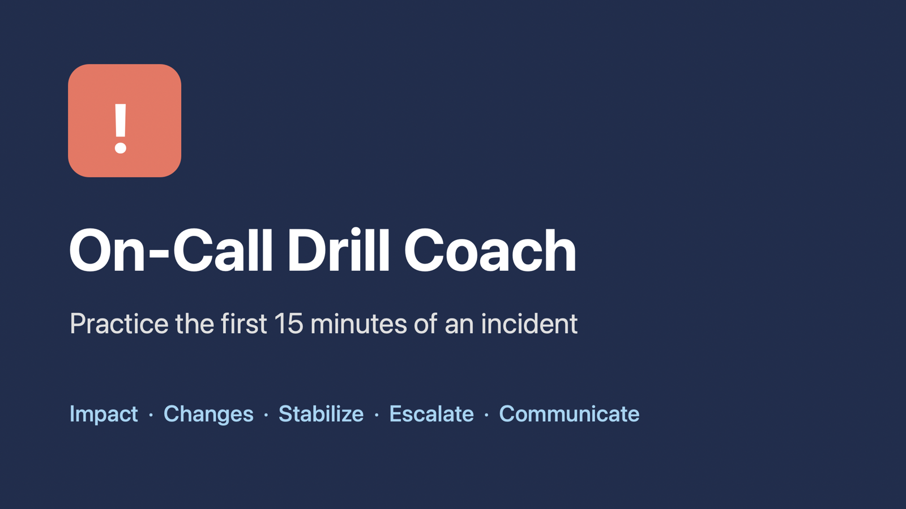

Building practical, responsible AI tools for engineering teams.
I help teams use AI where it genuinely helps, and test it hard where it doesn't, so the people who depend on our systems can trust them.
About
Professional bio
I'm a backend software engineer. My day-to-day work is building and supporting production services and data pipelines, which has taught me that the hardest problems often hide in data that looks fine until someone reads the report. When I started, I couldn't fix a production failure on my own; I learned by working through those failures one at a time.
I'm now studying AI and machine learning in the AIML-500 course at Indiana Wesleyan University. I use AI tools at work, and I'm most interested in the part the tools don't do for you: deciding what matters, checking that the output is actually right, and taking responsibility for what ships. My goal is to lead AI adoption on engineering teams in a way that makes people faster without making systems less trustworthy.
Value proposition
I bring an engineer's habit of testing everything to AI adoption: I build small, useful AI tools for engineering teams, test them against how they can fail, and document what I learn so other teams can do the same safely.
Work
Artifacts
Finished work from my AIML-500 coursework, written up so other engineers can learn from it and reuse it.

- Artifact 1
- AI chatbot
- Design Thinking
On-Call Drill Coach
An AI practice partner that role-plays the first 15 minutes of a production incident and coaches five response habits. Tested against its own rules and improved from version 1 to version 2.
Read the case study →